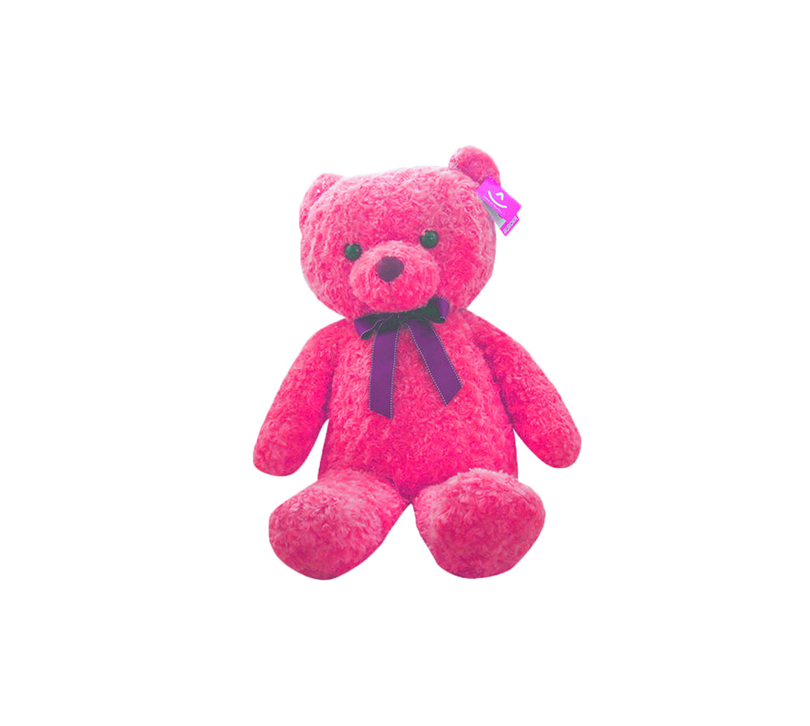
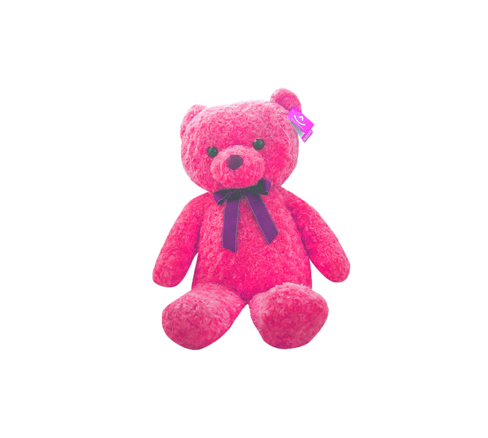

대상화

대상화 (對象化) [대ː상화]
[명사] 1. 어떠한 사물을 일정한 의미를 가진 인식의 대상이 되게 함.
미디어에서 "걸그룹"이라는 이름 아래에 여성들에게 요구되어 온
컨셉(Concept), 이상적인 여성의 모습을 남성의 모습으로 치환한다.
이제부터 "보이그룹"은 대상화 되며, 여성뿐만 아닌 남성의 모습으로도 같은 감상을 느낄 수 있을 것이다.
순수하고 요염하며 깜찍한 보이그룹을 음미해보자.

BoyGroup 1st Album
Track


PURE 순수
1.사사로운 욕심이나 못된 생각이 없음
2. 전혀 다른 것의 섞임이 없음


작은 두 손 모아 하늘에 기도하죠 어른이 되길 바래 보며
오늘도 어딘가에서 날 찾고 부르고 있을 것만 같아
그때의 누나 지금 어떤 모습일까 예전에 그 모습 그대로일까


여자들은 똑같대
믿지 말래 사랑한다는 말
사랑하기도 전에
말이 먼저 나오기 때문에

여자라 쓰고 늑대라 읽으랬어
도대체 여자들 그동안 남자에게 왜 그랬어
너무나 많은 남자들 마음을 울린 죄
때문에 그러니 내게 좀 더 널 보여줄래?

SEXY 요염한
1. 성적 매력이 있는
2. 도발적인


깨물어 버리고 싶은 새빨간 사과처럼 (I love u like)
네 입술 위에 묻은 달콤한 크림처럼 (I love u like)
삼켜버리고 싶은 새콤한 과즙처럼 (I love u like)


새빨간 립스틱을 바른 나는 빨개요 (빨개요)
깨물어 주고 싶은 애교가 예술이에요
밤마다 내가 생각나 LIKE 매콤한 라면
먼저 들어와 봐 내가 좋다면
뜨거워지니 느낌 오니
처음부터 통했어 눈빛만으로
우린 알아 서로가 원하는 걸
네 맘껏 나를 원해 Just let's dance
CUTE 깜찍한
1.예쁘고 고운
2. 애교가 있어서 사랑스러운

Mr. Chu 입술 위에 Chu 달콤하게 Chu
온몸에 난 힘이 풀려
내 맘 흔들 흔들어 날 흔들어놔요
I'm falling falling for your love
 

짧은 치말 입어볼까 아님 반바질 입을까
이것 저것 고민하다 시간만 가
분홍 립스틱을 바를까 살이 좀 찐 것 같아
옷 입는 맵시가 나질 않아
너만 보이면
살랑살랑 네게 다가가
애교부리고 있어
코맹맹이소리까지 나도 모르게
어쩌면 좋아